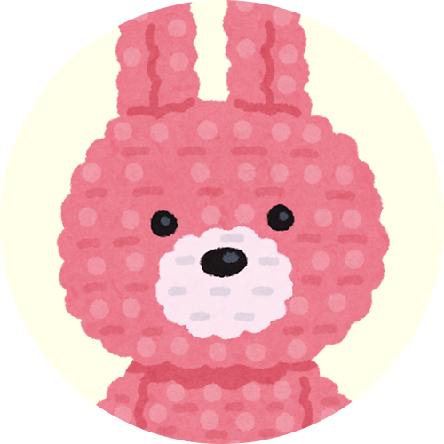
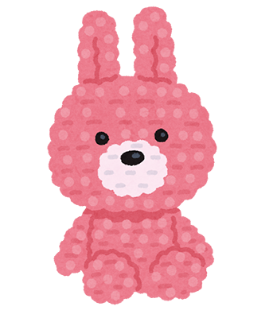
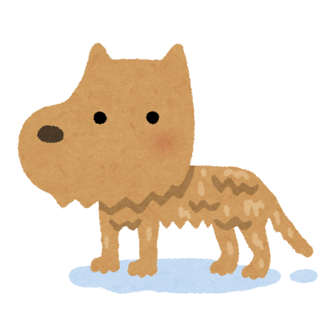
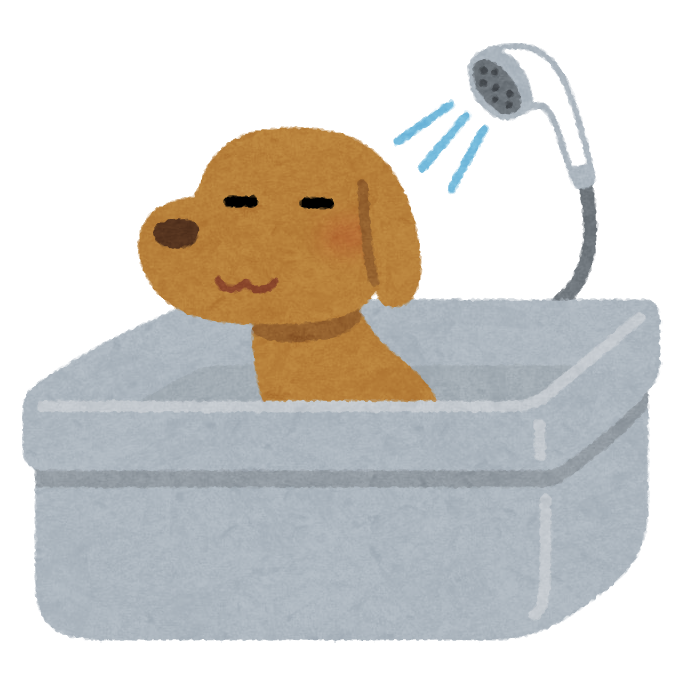

プロフ

- 名前
- 〇〇〇〇 〇〇〇
- 〇〇 〇
- 誕生日
- 〇月〇〇日
- 出身地
- 〇〇
- 性格
- マイペース
- 座右の銘
- 〇〇〇〇〇〇
- 好きな動物
- 犬
好きな動物は犬！実際にご自宅で飼われているみたいです。
好きな食べ物は苺とグミ、好きなグミは後程ランキングで紹介します。
趣味は編み物
しゅみ
- アイドル
- 音楽鑑賞
- 編み物
女性アイドルが好き!!音楽鑑賞はなんでも聞くみたいです。
実際に作られた編み物はこちら!
優しい感じの色使いでどれも可愛いですね！

ランキング
グミ
- 忍者飯:鉄の鎧
- ピュレグミ
- ピュアラルグミ
おにぎりの具
- たらこ
- こんぶ
- さけ
わんこ
名前は〇〇〇ちゃん！お風呂が大好き！とても可愛いですね！！

